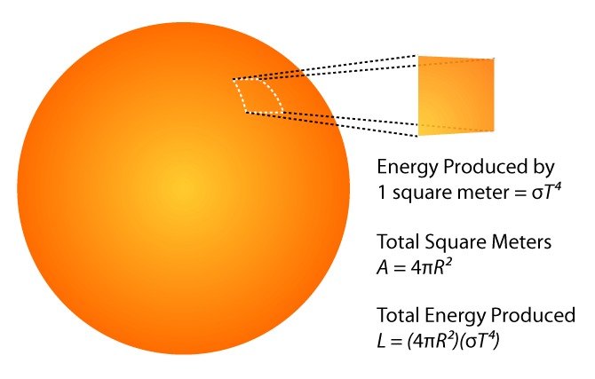

Learning Objectives
After reading the background information and working through all exercises in the simulator a student should:
- know the definition of luminosity.
- understand that luminosity depends on the star's radius and surface temperature.
- recognize the vast range of values for luminosity.
- know that the sun's luminosity is near the middle of possible stellar luminosity values.
Background Information
Luminosity is defined as the total energy a star releases each second. It is normally given in units of joules per second or watts.
The luminosity of a star depends on both its surface temperature and its size. Luminosity is the product of 1) the Stefan-Boltzmann Law describing how much energy is radiated by each square meter of a star in 1 second and 2) the star's surface area.

The luminosity of the sun is 3.8 x 1026 J/s. Other stars have a very wide range of luminosities: there are large hot stars that are 100,000 times as luminous as the sun and there are small, cool stars 100,000 times less luminous than the sun.
Exercises
- Set the simulator to the preset Antares. This star has a very large luminosity. Explain what makes this star so luminous.
- Set the simulator to the preset Alkaid. This star has a large luminosity. Explain what makes this star so luminous.
- Set the simulator to the preset Barnard’s Star. This star has a very small luminosity. Explain what makes this star’s luminosity so small.
- Antares represents one of the most luminous stars. Barnard’s Star represents one of the least luminous stars. After looking at these two stars, how would you describe the luminosity of the sun?
- The star Beta Aquarii has a surface temperature very close to that of the sun and a luminosity 2200 times that of the sun. What can you conclude about its size? Use the simulator to check your reasoning.
- Estimate the luminosity of a hypothetical star having the same size as the sun but having a surface temperature of 12000 K. Check your answer in the simulator.
About
This astronomy “Little Big Picture” was programmed by REU student Nick Robe. It is an early effort of the UNL Astronomy Education Group to provide materials for mobile devices. More astronomy teaching materials can be found on the web at astro.unl.edu.
This simulation makes use of the Dojo tooklit available at dojotoolkit.org.
Background image by P. van de Haar at Wide field astrophotography.